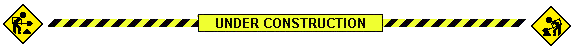

DigitalCrafts Full-Stack Immersive Feb. 2021 Cohort
Welcome! This site contains daily lecture notes for the DigitalCrafts' 16-week tech bootcamp that began 02/01/2021.
Course Notes
- Week 1
- Week 2
- Day 1 - to be added soon
- Day 2 - to be added soon
- Day 3 - to be added soon
- Day 4 - to be added soon
- Day 5 - to be added soon
- Week 3
- Day 1 - Today's assignment was "create a 90's-style website". I took our instructor at his word! Specific 90s Elements:
- patterned background
- custom cursor
- text-heavy site
- "Under Construction" banner